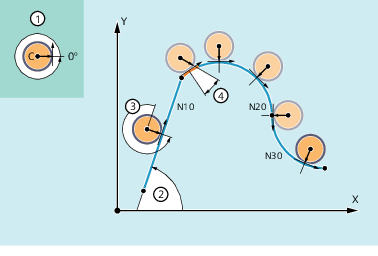

Mit der Kopplungsfunktion "Tangentialsteuerung" wird eine Rundachse als Folgeachse auf zwei Geometrieachsen als Leitachsen so gekoppelt, dass die Ausrichtung der Folgeachse eine Funktion der Bahntangente der Leitachsen ist.
Hat die durch die Leitachsen beschriebene Kontur einen unsteten Satzübergang bzw. Ecke, kann zwischen folgendem Eckenverhalten gewählt werden:
Die Dynamik der Rundachse hat keine Rückwirkung auf die Leitachsen.
Die Dynamik der Rundachse wird bei der Bahnplanung der Leitachsen zusammen mit den programmierbaren Parametern "Überschleifweg" und "Winkeltoleranz" berücksichtigt.
Die Leitachsen werden vor der Ecke angehalten und die Folgeachse in einem automatisch generierten Zwischensatz neu ausgerichtet.
Die Eckenerkennung erfolgt abhängig vom Wert des Maschinendatums MD37400 $MA_EPS_TLIFT_TANG_STEP (Tangentenwinkel für Eckenerkennung).
Das folgende Bild soll die Wirkungsweise der Tangentialsteuerung veranschaulichen:
① | Grundstellung und prositive Drehrichtung der Folge- / Rundachse C |
② | Winkel der Bahntangente in der Bearbeitungsebene X/Y |
③ | Offsetwinkel = 270° bzw. -90° Die Rundachse wird mit einem programmierbaren Offsetwinkel von 270° zur Bahntangente nachgeführt. |
④ | Überschleifweg und momentane Winkelabweichung Beim Satzübergang von N10 zu N20 enthält die Kontur einen nichtstetigen Übergang bzw. Ecke. Aufgrund einer zu geringen Dynamik kann die Folgeachse über einen Bahnbereich (orange) der Bahntangente nicht folgen. Die Dynamik der Folgeachse ist aber ausreichend, um im weiteren Verlauf der Kreissätze N20 und N30 der Bahntangente exakt zu folgen. |
Typische Anwendungsbereiche der Tangentialsteuerung sind:
Tangentiales Anstellen eines drehbaren Werkzeugs beim Nibbeln
Nachführen der Werkstückausrichtung bei einer Bandsäge
Anstellen eines Abrichtwerkzeugs an eine Schleifscheibe
Anstellen eines Schneidrädchens zur Glas- oder Papierverarbeitung
Tangentiale Zuführung eines Drahts beim 5-achsigen Schweißen
Die Tangentialkopplung kann im NC-Programm definiert, ein- und ausgeschaltet und gelöscht werden: